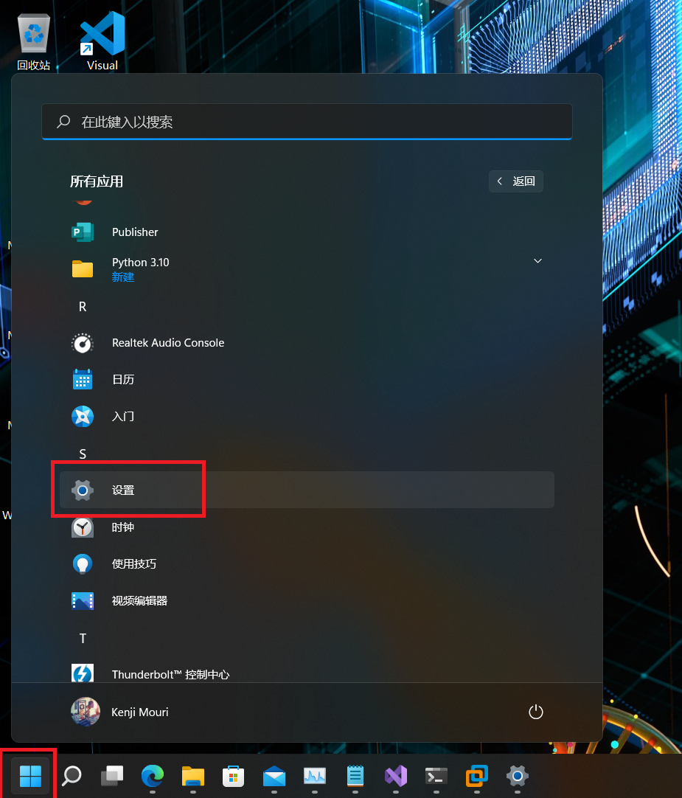
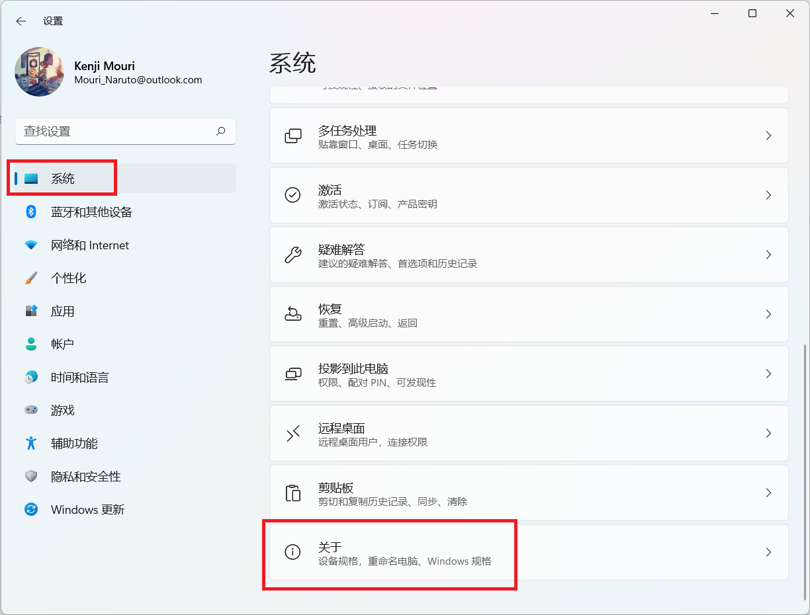
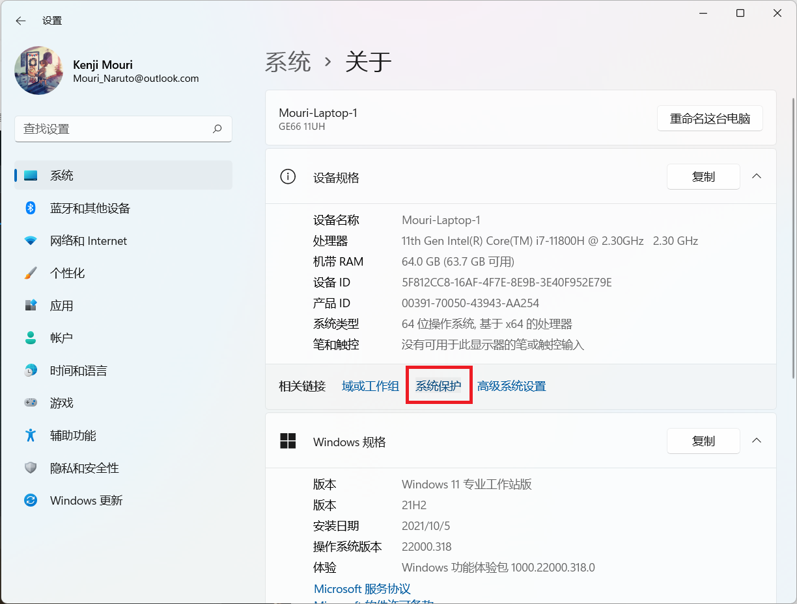
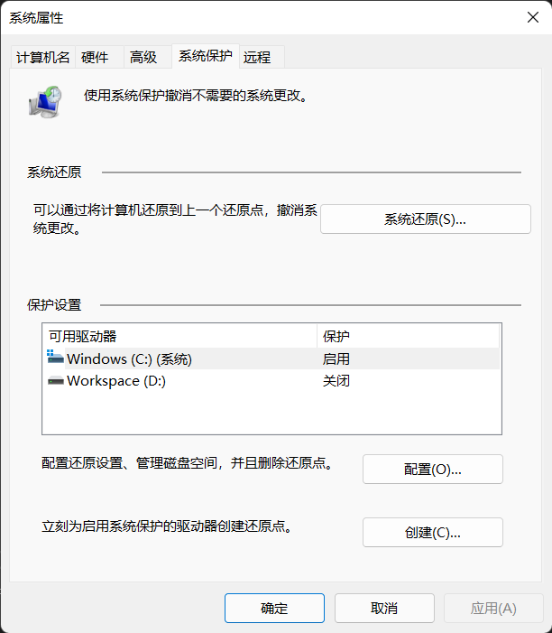

系统还原的使用方法
从 Windows Me 开始，微软在 Windows 操作系统中添加了系统还原功能。 由于该功能相当占用空间而且并不如其他快照类工具实用，于是成为一个冷门的鸡肋功能。这个工具出了也有二十多年了， 而且微软也进行了诸多改进，譬如从 Windows Vista 开始系统还原的底层实现从过滤驱动改为卷影复制，Windows 8 开始系统还原最小创建间隔。但是这个功能知道的人却不多，即使知道的人也大概率会选择禁用该功能。 但是我却不大建议禁用系统还原，毕竟在诸如系统补丁安装失败的情况下还是能派上些用场的。
为了让人们能更好的驾驭系统还原功能，我写下了这篇文章。
图形界面
本节教程描述以 Windows 11 为例子。
要想进入系统保护的设置页面，大致步骤为 开始 -> 所有应用 -> 设置 -> 系统 -> 关于 -> 系统保护， 详情可以参考下面的图片。




读者可以在打开的系统保护设置页面中创建还原点、启用或禁用系统还原、管理磁盘空间占用和将系统恢复到某个还原点。 这个简明易懂的界面对于大部分用户来说已经够用了，然而这部分由于并不是本文的重点，于是需要读者自行去探索。
命令行和脚本
本节提到的命令和脚本均需读者以管理员身份运行的命令提示符下运行。
通过 WMI 查看系统还原点信息
PowerShell -NoLogo -NoProfile -NonInteractive -InputFormat None -ExecutionPolicy Bypass Get-WmiObject -Class SystemRestore -Namespace Root\Default
示例结果
1 | |
通过 vssadmin 工具查看系统还原的空间占用情况
vssadmin List ShadowStorage
示例结果
1 | |
通过 vssadmin 工具清理系统还原点
- 删除特定分区 (以 C 分区为例) 中的所有还原点
vssadmin Delete Shadows /For=C: /All /Quiet
- 删除所有分区的所有还原点
vssadmin Delete Shadows /All /Quiet
- 删除特定分区 (以 C 分区为例) 中的除最近的还原点之外的所有还原点
vssadmin Delete Shadows /For=C: /Oldest /Quiet
- 删除所有分区中的除最近的还原点之外的所有还原点
vssadmin Delete Shadows /Oldest /Quiet
通过 vssadmin 工具调整系统还原磁盘空间占比
以下是调整系统还原磁盘空间占比的命令行操作方法和对应的说明。
vssadmin Resize ShadowStorage /For=ForVolumeSpec /On=OnVolumeSpec /MaxSize=MaxSizeSpec
用于重新调整 ForVolumeSpec 和 OnVolumeSpec 之间的卷影副本存储关联的最大值。重新调整存储关联会导致卷影副本消失。 当某些卷影副本被删除时，卷影副本存储空间会压缩。如果将 MaxSizeSpec 指定为值 UNBOUNDED，卷影副本存储空间将没有限制。 可以以字节为单位或 ForVolumeSpec 存储卷的百分比形式指定 MaxSizeSpec。对于字节级别指定，MaxSizeSpec 必须是 320MB 或更大， 并接受以下后缀: KB、MB、GB、TB、PB 和 EB。另外 B、K、M、G、T、P 和 E 是可以接受的后缀。若要指定 MaxSizeSpec的百分比， 请使用 % 字符作为数值的后缀。如果没有提供后缀，MaxSizeSpec 单位是字节。
为了更好的让用户理解上述说明，以下是对应的命令示例。
vssadmin Resize ShadowStorage /For=C: /On=D: /MaxSize=900MB
vssadmin Resize ShadowStorage /For=C: /On=D: /MaxSize=UNBOUNDED
vssadmin Resize ShadowStorage /For=C: /On=C: /MaxSize=20%
通过 PowerShell 操作系统还原
由于我并不经常使用 PowerShell，于是仅提供相关用法的微软文档参考。
- 创建还原点 (Checkpoint-Computer) 请参阅 https://docs.microsoft.com/en-us/powershell/module/microsoft.powershell.management/checkpoint-computer。
- 恢复到特定还原点 (Restore-Computer) 请参阅 https://docs.microsoft.com/en-us/powershell/module/microsoft.powershell.management/restore-computer。
- 启用特定分区的系统还原 (Enable-ComputerRestore) 请参阅 https://docs.microsoft.com/en-us/powershell/module/microsoft.powershell.management/enable-computerrestore。
- 禁用特定分区的系统还原 (Disable-ComputerRestore) 请参阅 https://docs.microsoft.com/en-us/powershell/module/microsoft.powershell.management/disable-computerrestore。
通过 mshta 调用 WMI 操作系统还原
- 创建系统还原点
mshta vbscript:getobject(“winmgmts:\.\root\default:Systemrestore”).createrestorepoint(“系统还原点”,0,100)(window.close)
- 启用系统还原
mshta vbscript:getobject(“winmgmts:\.\root\default:Systemrestore”).Enable(“分区，譬如 C:，如果相对所有分区进行操作请留空”)(window.close)
- 禁用系统还原
mshta vbscript:getobject(“winmgmts:\.\root\default:Systemrestore”).Disable(“分区，譬如 C:，如果相对所有分区进行操作请留空”)(window.close)
通过 VBScript 调用 WMI 操作系统还原
- 创建系统还原点
1
getobject("winmgmts:\\.\root\default:Systemrestore").createrestorepoint("系统还原点",0,100) - 开启系统还原
1
getobject("winmgmts:\\.\root\default:Systemrestore").Enable("分区，譬如 C:，如果相对所有分区进行操作请留空") - 关闭系统还原
1
getobject("winmgmts:\\.\root\default:Systemrestore").Disable("分区，譬如 C:，如果相对所有分区进行操作请留空") - 获取还原点的序号
1
2
3
4Set RPSet = GetObject("winmgmts:root/default").InstancesOf ("SystemRestore")
for each RP in RPSet
wscript.Echo "还原点序号： " & RP.SequenceNumber & ", 还原点名称： " & RP.Description & ", 还原点类型： ", RP.RestorePointType & ", 创建时间： " & RP.CreationTime
next - 执行系统还原
1
2
3
4
5
6
7
8Set obj = GetObject("winmgmts:{impersonationLevel=impersonate}!root/default:SystemRestore")
if obj.Restore(还原点的序号) <> 0 Then
wscript.Echo "Restore failed"
End If
Set OpSysSet = GetObject("winmgmts:{(Shutdown)}//./root/cimv2").ExecQuery("select * from Win32_OperatingSystem where Primary=true")
for each OpSys in OpSysSet
OpSys.Reboot()
next
使用 C# 操作系统还原
请参阅 通过 C# 使用系统还原。
使用 C++ 操作系统还原
请参阅 通过 C++ 使用系统还原。
相关内容
Windows 研究笔记本博客所有文章除特别声明外，均采用 CC BY-NC-ND 4.0 协议 ，转载请注明出处！